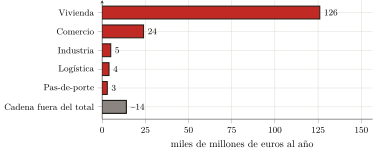

— Traducción por IA — Claude Fable 5 (Anthropic)
Tercera parte — Medición empírica de la captación · Capítulo 11
11 La ley general y su cuantificación
Los dos capítulos precedentes han medido, cada uno en su dominio, lo que las partes I y II habían nombrado sin cifrarlo todavía. Queda hacer la suma, y sobre todo decir la ley que esta revela, pues un número, por grande que sea, no vale sino por el mecanismo que saca a la luz. Este capítulo cierra la parte empírica sumando las dos medidas, formulando la ley que revelan y nombrando lo que este libro deja a otros.
11.1 La suma: unos 162 000 millones de euros al año
La cuenta se hace pronto, pues no tiene más que dos términos. La renta residencial (el tributo que el habitante paga en su alquiler, real o imputado) asciende a 126 000 millones de euros al año (capítulo 9). La renta de actividad (la que el comerciante, el industrial, el logístico pagan por sus muros y trasladan a sus precios, hasta el consumidor) añade del orden de 36 000 millones (capítulo 10). En total, el tributo del suelo recaudado en Francia sobre el acceso al espacio construido ronda los 162 000 millones de euros al año (figura 1.1).

Pongamos este número en relación con magnitudes familiares. Es cerca del 6 % del producto interior bruto; es, por hogar fiscal, del orden de 329 euros al mes (256 por la vivienda, 73 repercutidos en los precios), es decir, más de dos meses de SMIC neto — el salario mínimo francés — captados cada año; es, en fin, cerca de dos veces la recaudación del impuesto sobre la renta.1 Que una suma comparable al impuesto sobre la renta sea recaudada, fuera de todo voto y sin contrapartida productiva, por el solo hecho de ocupar un lugar.
Se lo dará por lo que es, sin endurecerlo. El término de la vivienda es sólido: deriva de los agregados del SDES (capítulo 9); el de la actividad es más frágil, pues el parque edificado se conoce mal, pero se ha tomado bajo, y es más verosímilmente una cota inferior que un techo (capítulo 10). Al lado, se ha nombrado y calibrado otra extracción (los márgenes apilados de la cadena que produce lo edificado, unos quince mil millones de beneficio «puro»), pero se la ha mantenido fuera de la cuenta, porque grava bienes reproducibles, no el acceso a un suelo que no lo es. El tributo del suelo, por su parte, es efectivamente de alrededor de 162 000 millones: un orden de magnitud, más bien minorado, cuya robustez importa menos que lo que designa.
11.2 La ley general
Pues bajo la diversidad de las formas, el mecanismo es único. El alquiler de habitación, el alquiler imputado del propietario ocupante, el arrendamiento comercial, el pas-de-porte, el interés que el comprador paga sobre el precio capitalizado de su suelo — y, en el campo, el arriendo rústico del campesino — no son sino las máscaras de una misma operación: la captación, por el tenedor de un título sobre una porción del espacio, de un ingreso de monopolio sobre el acceso a esa porción, sin contrapartida productiva. El suelo no produce, condiciona (capítulo 1); la renta es el peaje de ese condicionamiento (capítulos 1 y 3); ha tomado, con el capitalismo, su forma acabada — cesible, maximizable, capitalizable (capítulos 3 y 4); funda una división de clase, el usuario y el rentista (capítulo 5); las categorías la disimulan (capítulos 6 y 7), las teorías la justifican (capítulo 8); y la medida, en fin, confirma su masa (capítulos 9 y 10). La ley no se deduce de un principio: es el invariante que permanece cuando se han retirado, una a una, todas las formas particulares.
Este invariante no tiene nada de nuevo; está solamente, hoy, en su colmo. El tributo sobre el acceso al suelo es tan viejo como la ciudad sedentaria: se lo ha visto nacer en Uruk, donde el templo y luego el palacio asignaban la tierra y recaudaban sobre su uso (capítulo 2). Lo que ha cambiado no es la existencia de la exacción, sino su forma. La tenencia condicional e inalienable de la ciudad-templo, el canon consuetudinario y no maximizable del feudo, han cedido ante la propiedad absoluta del Código civil — «el derecho de gozar y disponer de las cosas de la manera más absoluta» — que hace el título cesible y la renta maximizable. El precio no inventó el tributo: lo universalizó y lo llevó a su máximo, haciendo del acceso al suelo una mercancía como otra cualquiera. Los 162 000 millones medidos son el rostro contemporáneo, capitalista, del más viejo problema político de las sociedades sedentarias: ¿cómo asignar el espacio enrarecido por el número?
11.3 Apertura: la cuestión campesina
Esta ley encuentra su forma más acabada no en la ciudad, sino en el campo — y es por ahí por donde este libro designa lo que deja a otros. El campesino está preso en el tributo del espacio más completamente que ningún otro, porque acumula sus dos caras. Aguas arriba, el estrangulamiento: el suelo agrícola primero (el arriendo rústico es la forma rural del mismo peaje), pero también el cerrojo de las semillas, del crédito, de las máquinas, de la energía, esas condiciones de la producción que unos oligopolios detentan. Aguas abajo, la captura: los transformadores y la gran distribución, que controlan el acceso al mercado y fijan los precios. Entre los dos, bajo la coacción de un librecambio con espacios de normas sociales y ecológicas inferiores, el margen del productor queda comprimido hasta el hueso.
Se reconocerá, en estas aguas arriba y aguas abajo, la distinción que el capítulo 10 mantuvo: el arriendo rústico es renta del espacio en sentido estricto; el estrangulamiento por las semillas o la distribución es la extracción vecina, oligopolística, que grava las condiciones de la producción sin ser propiamente hablando una renta del suelo. Medirlas, una y otra, con la misma disciplina, corresponderá a otros. Esa medida mostraría sobre todo por qué el campesino realiza la ley en su punto más alto: porque él es, a la vez, el usuario y el productor, doblemente preso — pagando por acceder a la tierra que trabaja, y despojado de lo que saca de ella.
Ese es el sentido de los dos artículos que están en el origen de este trabajo2: este libro ha medido el tributo sobre el habitante y el trabajador; el tributo sobre el campesino queda por medir. Uno y otro conducen a la misma pregunta, que la medida no hace sino volver inevitable. Se sabe ahora cuánto se recauda sobre el acceso al espacio, y que esa exacción no tiene contrapartida productiva. La pregunta deja entonces de ser contable para volverse política: ya no «¿cuánto?», sino «¿debe ser así?». Es el objeto de la última parte.
Balance
La parte III ha hecho el inventario que las dos primeras habían preparado. Establece que en Francia el acceso al espacio construido está gravado con un tributo de alrededor de 162 000 millones de euros al año (la renta de la vivienda y la de la actividad reunidas), recaudado sin contrapartida productiva, y más verosímilmente minorado que mayorado. Muestra que, bajo la diversidad de alquileres, arrendamientos e intereses, ese tributo obedece a una ley única: la captación de un ingreso de monopolio sobre el acceso al suelo, forma capitalista acabada de una exacción tan antigua como la ciudad. Y deja, a propósito, fuera de su cuenta lo que no pertenece a ella: los márgenes de la cadena productiva, extracción vecina pero distinta. Queda extraer de esta constatación su consecuencia: si el tributo no es más que una forma histórica entre otras de la asignación del suelo, entonces otra asignación es posible. Es lo que la parte IV se propone pensar.
PIB 2023: 2 803 miles de millones de euros. Hogares fiscales: 41 millones (DGFiP). SMIC neto mensual 2026: ≈ 1 443 €. Impuesto sobre la renta: ≈ 92 000 millones de euros al año. El detalle y las fuentes de cada línea están en los capítulos 9 y 10.↩︎
«Erst Essen, dann Miete» ((Portalez 2024a)) proporciona la matriz de la última parte de este libro — la vivienda al habitante; «Paysans et capitalisme» ((Portalez 2024b)) plantea la cuestión campesina — la tierra a quienes la trabajan.↩︎